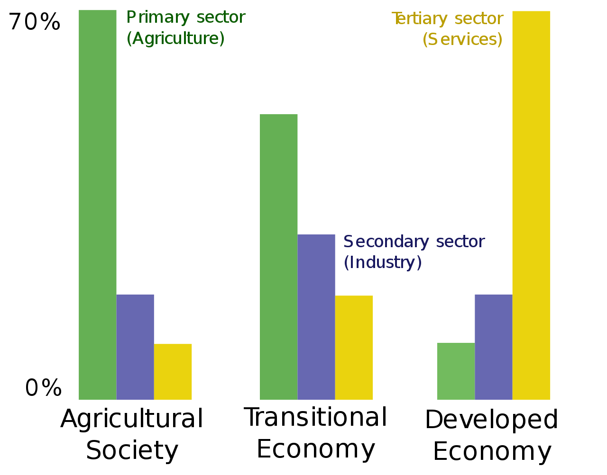

Agriculture
Agriculture is the science, art and practice of cultivating plants and livestock.Agriculture was the key development in the rise of sedentary human civilization, whereby farming of domesticated species created food surpluses that enabled people to live in cities. The history of agriculture began thousands of years ago. After gathering wild grains beginning at least 105,000 years ago, nascent farmers began to plant them around 11,500 years ago. Pigs, sheep, and cattle were domesticated over 10,000 years ago. Plants were independently cultivated in at least 11 regions of the world. Industrial agriculture based on large-scale monoculture in the twentieth century came to dominate agricultural output, though about 2 billion people still depended on subsistence agriculture. Modern agronomy, plant breeding, agrochemicals such as pesticides and fertilizers, and technological developments have sharply increased crop yields, while causing widespread ecological and environmental damage. Selective breeding and modern practices in animal husbandry have similarly increased the output of meat, but have raised concerns about animal welfare and environmental damage. Environmental issues include contributions to global warming, depletion of aquifers, deforestation, antibiotic resistance, and growth hormones in industrial meat production. Agriculture is also very sensitive to environmental degradation, such as biodiversity loss, desertification, soil degradation and global warming, which cause decrease in crop yield.Genetically modified organisms are widely used, although some are banned in certain countries.
History
The development of agriculture enabled the human population to grow many times larger than could be sustained by hunting and gathering. Agriculture began independently in different parts of the globe, and included a diverse range of taxa, in at least 11 separate centres of origin. Wild grains were collected and eaten from at least 105,000 years ago.From around 11,500 years ago, the eight Neolithic founder crops, emmer and einkorn wheat, hulled barley, peas, lentils, bitter vetch, chick peas and flax were cultivated in the Levant. Rice was domesticated in China between 11,500 and 6,200 BC with the earliest known cultivation from 5,700 BC, followed by mung, soy and azuki beans. Sheep were domesticated in Mesopotamia between 13,000 and 11,000 years ago. Cattle were domesticated from the wild aurochs in the areas of modern Turkey and Pakistan some 10,500 years ago.Pig production emerged in Eurasia, including Europe, East Asia and Southwest Asia, where wild boar were first domesticated about 10,500 years ago.In the Andes of South America, the potato was domesticated between 10,000 and 7,000 years ago, along with beans, coca, llamas, alpacas, and guinea pigs. Sugarcane and some root vegetables were domesticated in New Guinea around 9,000 years ago. Sorghum was domesticated in the Sahel region of Africa by 7,000 years ago. Cotton was domesticated in Peru by 5,600 years ago,and was independently domesticated in Eurasia. In Mesoamerica, wild teosinte was bred into maize by 6,000 years ago. Scholars have offered multiple hypotheses to explain the historical origins of agriculture. Studies of the transition from hunter-gatherer to agricultural societies indicate an initial period of intensification and increasing sedentism; examples are the Natufian culture in the Levant, and the Early Chinese Neolithic in China. Then, wild stands that had previously been harvested started to be planted, and gradually came to be domesticated.
Contemporary agriculture
From the twentieth century, intensive agriculture increased productivity. It substituted synthetic fertilizers and pesticides for labor, but caused increased water pollution, and often involved farm subsidies. In recent years there has been a backlash against the environmental effects of conventional agriculture, resulting in the organic, regenerative, and sustainable agriculture movements. One of the major forces behind this movement has been the European Union, which first certified organic food in 1991 and began reform of its Common Agricultural Policy (CAP) in 2005 to phase out commodity-linked farm subsidies, also known as decoupling. The growth of organic farming has renewed research in alternative technologies such as integrated pest management, selective breeding,[84] and controlled-environment agriculture.Recent mainstream technological developments include genetically modified food. Demand for non-food biofuel crops, development of former farm lands, rising transportation costs, climate change, growing consumer demand in China and India, and population growth, are threatening food security in many parts of the world. The International Fund for Agricultural Development posits that an increase in smallholder agriculture may be part of the solution to concerns about food prices and overall food security, given the favorable experience of Vietnam.[95] Soil degradation and diseases such as stem rust are major concerns globally;[96] approximately 40% of the world's agricultural land is seriously degraded.[97][98] By 2015, the agricultural output of China was the largest in the world, followed by the European Union, India and the United States.[81] Economists measure the total factor productivity of agriculture and by this measure agriculture in the United States is roughly 1.7 times more productive than it was in 1948.
WorkForce

Agriculture is the science, art and practice of cultivating plants and livestock.Agriculture was the key development in the rise of sedentary human civilization, whereby farming of domesticated species created food surpluses that enabled people to live in cities. The history of agriculture began thousands of years ago. After gathering wild grains beginning at least 105,000 years ago, nascent farmers began to plant them around 11,500 years ago. Pigs, sheep, and cattle were domesticated over 10,000 years ago. Plants were independently cultivated in at least 11 regions of the world. Industrial agriculture based on large-scale monoculture in the twentieth century came to dominate agricultural output, though about 2 billion people still depended on subsistence agriculture. Modern agronomy, plant breeding, agrochemicals such as pesticides and fertilizers, and technological developments have sharply increased crop yields, while causing widespread ecological and environmental damage. Selective breeding and modern practices in animal husbandry have similarly increased the output of meat, but have raised concerns about animal welfare and environmental damage. Environmental issues include contributions to global warming, depletion of aquifers, deforestation, antibiotic resistance, and growth hormones in industrial meat production. Agriculture is also very sensitive to environmental degradation, such as biodiversity loss, desertification, soil degradation and global warming, which cause decrease in crop yield.Genetically modified organisms are widely used, although some are banned in certain countries.
Facts About Agriculture
at Clean Seed, we’re driving our technology to make all that data actionable. Our SMART Seeder MAX was designed to utilize that data that can get down to the square-foot level and [empower] us to essentially become a giant printer of seed and inputs to grow the best crop at the lowest cost possible.
The agriculture sector is undergoing what is called a digital revolution, and it’s all around our ability to grow more crops, essentially worldwide, to feed a growing population. We have to manage every square foot of field a little bit differently than we have been.

Innovating For The Right Balance Between Productivity And Sustainability In Agriculture Our innovations support farmers around the world and make a positive impact on the agricultural food system.
Yara International worked with the local government authorities in India, their vendors, suppliers and transporters to resume operations which were critical for supplying seeds and inputs to farmers for the next cropping season.
Hindustan Zinc, through its farm-based sustainable livelihood programme – Samadhan – played a key role in empowering over 10,000 farmers and their families in wake of Covid-19 pandemic. Launched in 2016, in association with BAIF, Samadhan programme traditionally offers agriculture interventions using farmer interest groups – aimed at improving production and sustainability practices.
TAFE – Tractors and Farm Equipment Limited, India’s second and world’s third largest tractor manufacturer by volumes, had launched a Free Tractor Rental Service for farmers in Uttar Pradesh, Rajasthan and Tamil Nadu, from April 1, 2020, for a period of 90 days.